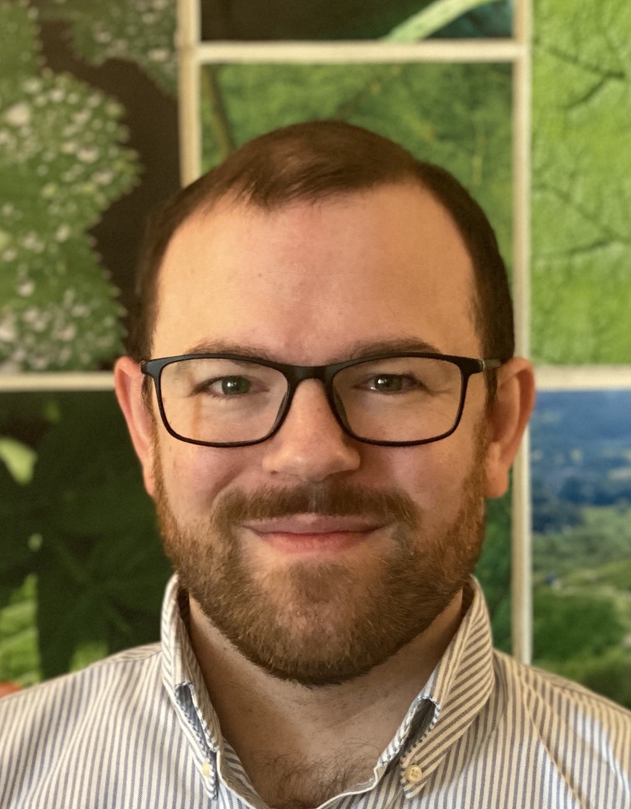
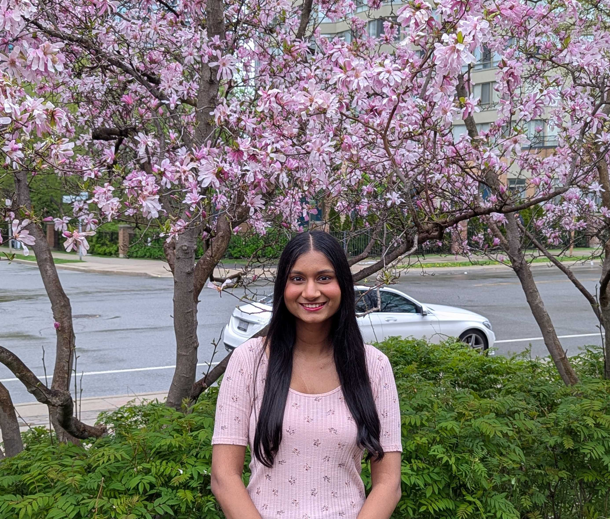
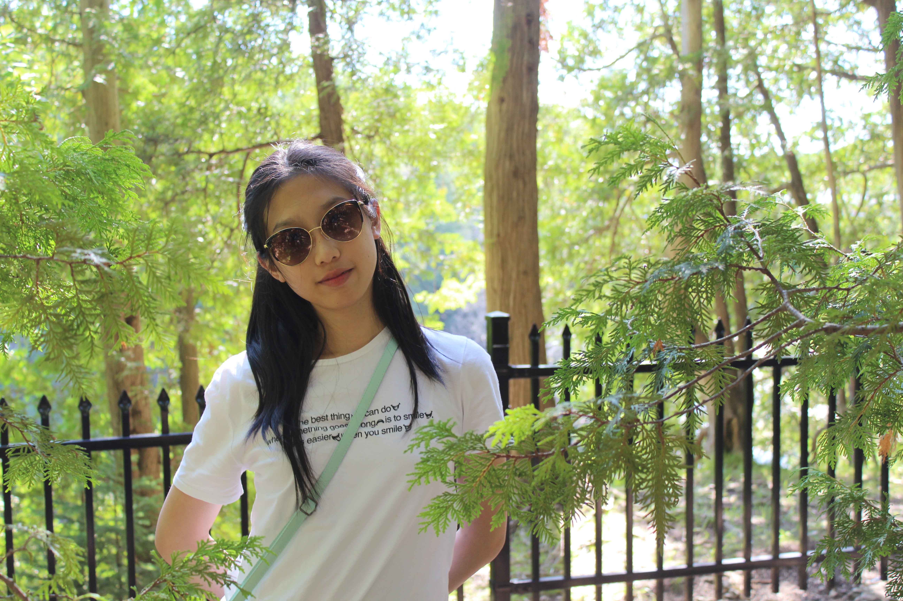
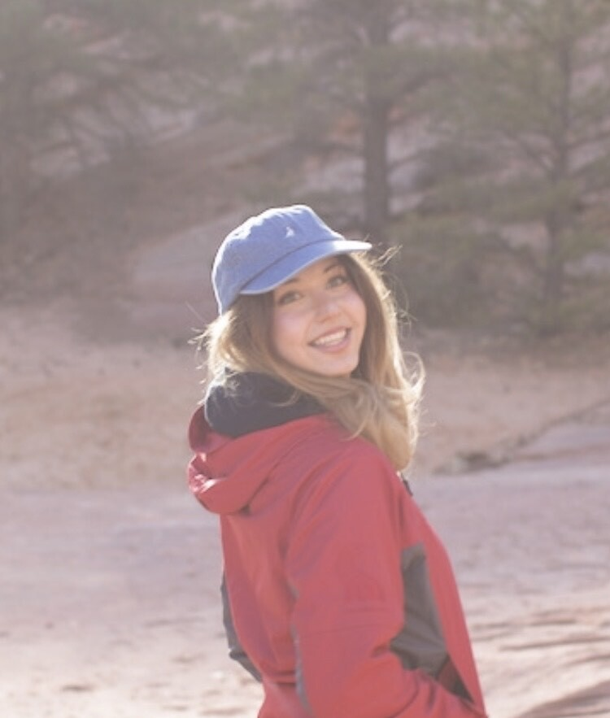
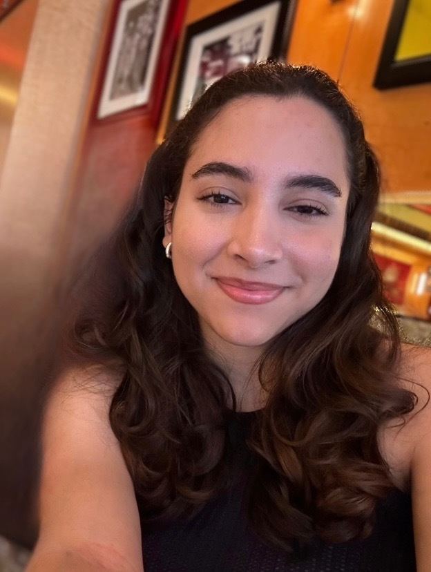

Members of the APPLY lab summer 2024! From left to right starting at the front row: (front) Anna, Zainab, Sylvia, Ido, and Ben. (Back) Avery, Brooke, Anny, and Jiali.
Directors

Dr. Benjamin Wolfe
Assistant Professor, Psychological & Brain SciencesUniversity of Toronto Mississauga
Dr. Wolfe directs the Wolfe Lab, and his research sits at the intersection of applied and basic vision
science.
Recently, he has focused on questions of human visual perception in driving, including how drivers
understand their environments and how they acquire the information that leads to their situational
awareness.
Dr. Wolfe also works on questions of readablity and legibility for digitally-presented text, and
additionally has interests in peripheral vision, saccade planning, visual attention and scene perception.
Dr. Wolfe is an assistant professor in the Psychology
Department at the University of Toronto Mississauga, and was a postdoctoral associate at
the Massachusetts Institute of Technology from 2015-2020 with Dr. Ruth Rosenholtz. Dr. Wolfe received his PhD in
Psychology from the University of California, Berkeley in 2015, where he was advised by Dr. David Whitney.
Dr. Anna Kosovicheva
Assistant Professor, Psychological & Brain SciencesUniversity of Toronto Mississauga
Dr. Kosovicheva directs the Kosovicheva Lab, and her research focuses on questions of spatial vision, binocular vision and eye movements. She is particularly interested in questions of visual localization, how we know where things are in the world, and how the visual system determines perceived position under conditions of uncertainty. Dr. Kosovicheva also studies deficits in binocular vision, particularly amblyopia and strabismus, applying psychophysical methods to new assessments. She is an assistant professor in the Psychology Department at the University of Toronto Mississauga, and was a postdoctoral fellow at Northeastern University from 2015-2020 with Dr. Peter Bex. Dr. Kosovicheva received her PhD in Psychology from the University of California, Berkeley in 2015, where she was advised by Dr. David Whitney.
Postdoctoral Fellows
Dr. Jiali Song
Postdoctoral Fellow, Psychological & Brain SciencesUniversity of Toronto Mississauga
Jiali is a post-doctoral fellow at the APPLY Lab. Her research interests include how vision and attention contribute to (un)safe driving. She is particularly interested in the contributions of depth perception and peripheral vision to driver behaviour, and how in-car warning systems can help or hinder driving performance. Jiali received her PhD in the department of Psychology, Neuroscience & Behaviour at McMaster University, where she was advised by Dr. Allison Sekuler and Dr. Hong-jin Sun.
Dr. Emily M. Heffernan
Postdoctoral Fellow, Psychological & Brain SciencesUniversity of Toronto Mississauga
Em is a post-doctoral fellow at the APPLY Lab. She is interested in how the ways in which we present information influence attention and learning. Her current work focuses on digital readability, specifically how varying font features affects typo detection. Em completed her PhD in the Department of Psychology at University of Toronto (St. George) under the supervision of Dr. Michael Mack. Outside of work, Em is an avid backcountry camper, reader, and (amateur) birder.
Graduate Students

Zainab Haseeb
Zainab is a third-year graduate student at the APPLY Lab. She recently graduated with an Honours Bachelor of Science from the University of Toronto Mississauga in 2022. Her current research involves two main areas: studying how different fonts affect digital text readability to improve accessibility and investigating the mechanisms behind individual differences in peripheral vision. When not in the lab, you can find Zainab either out on a local trail, or immersed in a good book while spending quality time with her cat, Toothless!
Silvia Guidi
Silvia is a second-year graduate student at the University of Toronto Mississauga. She joined the APPLY Lab in May 2021, and is working on a project examining how different variable fonts affect readbility.

Ido Ziv Li
Ido is a first-year graduate student at the University of Toronto Mississauga. He joined the APPLY lab in May 2024 and is working on a project examining the use of peripheral vision in hazard detection and localization. Outside of the lab, Ido enjoys cooking, baking, and pickling!
Undergraduates

Ginnie Wee
Ginnie is a third-year undergraduate student pursuing the Neuroscience and Psychology Specialists at UTM. She joined the APPLY Lab in Fall 2023 and is currently working on a project studying how binocular disparity and motion affects drivers’ ability to predict scenes. She hopes to learn more about experimental design and looks forward to strengthening her data analysis and presentation skills. In her free time, Ginnie enjoys all things Sanrio and Pusheen, as well as keeping the APPLY Lab well-fed with snacks.

Kiran Panicker
Kiran is a fourth-year undergraduate student pursuing the Computer Science and Psychology Majors at UTM. She joined the APPLY Lab in May 2025 as part of the Research Opportunity Program (ROP). She is currently working on a project exploring how font readability affects typo detection during visual search tasks. She hopes to better understand attentional failures like “look-but-fail-to-see” errors and gain hands-on experience with experimental design, eye tracking, and statistical modeling. In her free time, Kiran enjoys baking sweet treats and unwinding by playing story-rich co-op games with her friends.

Caroline Yuan
Caroline is a third-year undergraduate student that has recently joined the APPLY Lab in May 2025 as part of the Research Opportunity Program (ROP). She is currently working on a project that investigates individual differences in visual perception, and she hopes to gain hands-on experience with data analyses and eye tracking technology. Caroline is an avid coffee and boba enthusiast so if she's not in the lab, you may catch her in a café or a bubble tea shop drinking her 3rd cup of milk tea/coffee of the day.

Maria Gavrilov
Maria is a second-year undergraduate student pursuing a double major in Mathematics and Statistics with a minor in Computer Science at the University of Toronto Mississauga. She joined the APPLY Lab in September 2025 as part of the Work-Study Program. Her research interests centre on human visual perception in driving, with a particular focus on data analysis and modelling. Her interest in readability and perception was sparked by early exposure to large-scale digital readability research, including supporting synthesis work related to the Adobe Readability Initiative. She looks forward to developing her skills in experimental design, data analysis, and eye-tracking methods during her time in the lab. Outside the lab, Maria is a professional artist and enjoys hiking, playing chess, and exploring amateur astronomy!

Camila Vidal Affaqui
Camila is a second year undergraduate student at UTM pursuing a major in Biology for Health Sciences and a double minor in Chemistry and Psychology. She joined the APPLY Lab in September 2025 as part of the Research Opportunity Program (ROP), focusing on investigating individual differences in visual perception. She is excited to explore and learn more about the experimental design process in the lab and to communicate findings to broader audiences. In her downtime, you’ll normally find her with a cup of tea in hand, watching movies, or going out for treats with friends!